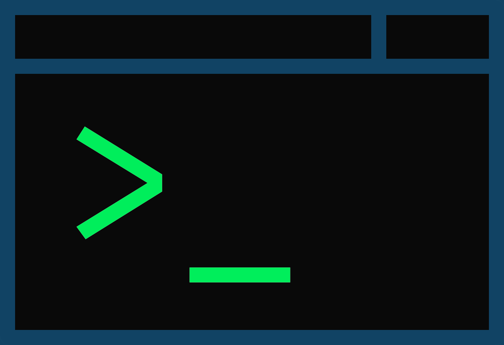

About
I am a student at UNESP Rio Claro, working on a Bachelor of Computer Science.
Fluent in english with basic spanish.
My interests in the area are diverse since I like to study and experiment with different tech
as a way to not limit myself. At the moment I'm studying Java, Python and Kotlin deeper, since
I have many personal projects which i believe these languages are suitable for. I hope to
soon include these projects in this page, as well as making it a better experience to visit!
My course completion work of the Information technology technical course was related to
microcontrollers and automation, the idea was developing a simple control and maintenance system
in hydroponic "blocks", to allow for expandable food production with low manual interference.
The physical system did not have deep developments in the time period allowed, but the
research done on hydroponic systems and microcontrollers had great development, which granted me
a great knowledge base on these subjects and in research.
I have professional experience with multiple microcontrollers, worked briefly with automotive
automation, bluetooth connection, electronics and user interface development.
Professional experience:
- FITec – Intern
- Started september 2018 – Completed november 2019
Research and
development on microcontrollers in C, including bluetooth connection for
large data arrays, timer system for asynchronous functions, function planner
and organizer in-system, brief front-end development in Angular and slight
back-end development in Java
Education:
- Colégio Técnico de Campinas – COTUCA, Campinas – Technical course in Information Technology
- Universidade Estadual Paulista – Unesp, Rio Claro – Bachelor of Computer Science
Extracurricular Activities:
- Scientific initiation in the field of linguistics – PIBIC-EM/CNPq
- Completed july 2017
Produção jornalística no ensino médio
- Member of student run newspaper – “Conexão Cotuca”
- Digital Girls - 29 september 2018
- Mandarin course – Module 1 – COTUCA
- Basic italian course – Colégio da Vila
Programming languages:
- C/C++
- Java
- Kotlin
- C#/.NET
- Python
- Delphi
- Bash
- SQL
Version control:
Aside from comp sci:
- I have two dogs called Leia and Luuna
- I enjoy exercising, before the pandemic i did so in the form of weightlifting,
but currently i do so in the form of calisthenics
- I enjoy strategy games, where in-game skills are determined by the agility of
thought and ability to predict future situations
- I am an administrator in a Discord server with over 1500 member in which people
partake in group events
- I always seek to involve and inform myself as much as possible about current
events and technological advancements which can be used to help people
- some smaller interests involve gardening, woodworking, drawing etc
Projects
Some projects developed or in development by me!
Batalha Naval(Java)
Battleship game developed in my time studying on COTUCA, the "AI" select blocks
completely randomly so the game difficulty is entirely based on the computer's
random number generator.

wakeonlan
Java example for the "wake-on-lan" functionality.
UDPServerExample
Example developed in a network programming class in COTUCA.

Administrador de servidor Discord(Python)
Work in progress for a bot to automate administrative functions in a Discord
server. Some functions to include: role association, rule enforcement and automated
responses.
Contato
Thanks you for accessing my recently revived portfolio! With time you will see
the increasing development of this page, according to the advancement of my skills
and development in my career.
If you wish to get in contact with me you can find me in these places:


(19)97105-4503
marinabarbosa@protonmail.com